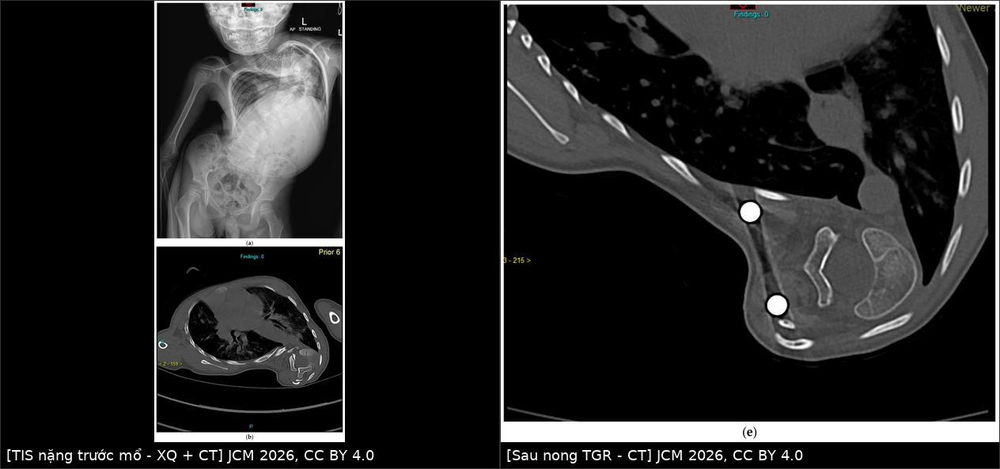
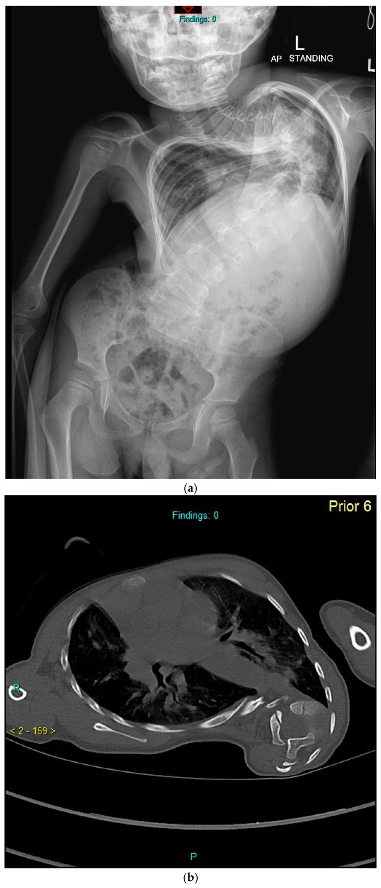
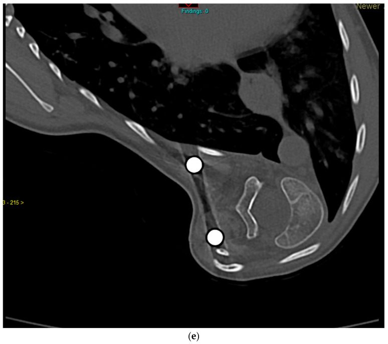

043 — Chăm sóc hô hấp quanh mổ & cai máy ở trẻ TIS/EOS sau mở rộng lồng ngực / Perioperative respiratory care and weaning in thoracic insufficiency syndrome and early-onset scoliosis
Tags: pattern:han-che-thong-khi pattern:hep-long-nguc vung:long-nguc vung:duong-tho anatomy:long-nguc score:AVR score:C-EOS protocol:da-ky-giac-ngu protocol:hoi-suc-nhi incidentaloma:bien-dang-long-nguc
Mức chắc chắn (certainty): tổng hợp y văn (literature synthesis) — số liệu từ 73 trẻ EOS mổ dụng cụ "thân thiện tăng trưởng" (biến chứng hô hấp sau mổ 21,9%, OR theo yếu tố nguy cơ) của Orthop Surg 2022 (PMC9251275); điểm luận chức năng hô hấp trong EOS của J Clin Med 2026 (PMC12842268, CC BY 4.0); 84 trẻ vẹo cơ–thần kinh được hội chẩn đa chuyên khoa, 48 ca mổ (biến chứng sớm 54,1%) của BMJ Paediatr Open 2025 (PMC11836852, CC BY-NC 4.0); ngưỡng đa ký giấc ngủ để khởi trị NIV của J Clin Sleep Med 2026 (PMC13379531); và một ca nguyên văn khó cai máy do hẹp eo ngực trên–chèn ép khí quản sau nong thanh (PMC13435391, CC BY 4.0).
Bài này là "phần chu phẫu" của 048. 048 dạy chẩn đoán TIS, SAL, chọn dụng cụ và nhịp nong; bài 043 trả lời phần trước mổ đo gì, trong mổ giữ gì, sau mổ cai máy thế nào, và vì sao trẻ vẫn có thể khó thở dù phim "đã chỉnh". Đọc kèm 001 (học thuyết thể tích) và 047 (biến dạng sau mở ngực).
1. Tổng quan bệnh học – cơ chế hình ảnh
- Vì sao trẻ TIS/EOS là nhóm "khó cai máy" nhất trong phẫu thuật cột sống nhi: ba bình diện cùng lúc —
- Hạn chế (restrictive): lồng ngực không lớn theo phổi → giảm thể tích dự trữ, giảm dung tích cặn chức năng (FRC); khi nằm ngửa hoặc nằm sấp (tư thế mổ), tạng đẩy hoành lên → đóng các đơn vị phổi đáy → shunt trong phổi tăng, giảm oxy máu.
- Tắc nghẽn (obstructive): 33–76% trẻ EOS có khiếm khuyết tắc nghẽn kèm theo, không tương quan với FVC; trong 49 trẻ được nong thanh, ba phần tư có tắc nghẽn dai dẳng và hơn một nửa nặng lên trong 5 năm (PMC12842268). Nghĩa là thở ra cũng là vấn đề, không chỉ "phổi nhỏ".
- Giảm thông khí khi ngủ (sleep hypoventilation): đa số trẻ TIS có rối loạn hô hấp khi ngủ, gồm cơn ngừng thở và tụt bão hoà, nặng nhất ở giấc ngủ REM vì trương lực cơ liên sườn–hoành thấp nhất (PMC12842268).
- Con số "phải nhớ" về mức hạn chế (dùng để phân tầng trước mổ):
- Trẻ chỉ khó thở khi FVC < 50% dự đoán — đánh giá lâm sàng rất kém nhạy, không thể "nhìn trẻ chơi bình thường" mà kết luận phổi ổn (PMC12842268).
- Chiều cao cột sống ngực T1–T12 < 18 cm là ngưỡng có ý nghĩa: 10/16 trẻ có FVC/FEV1 < 50% dự đoán**, so với **2/8** ở nhóm **18–22 cm** và **0/4** ở nhóm **> 22 cm (PMC12842268 dẫn Karol và cs). Đây là lý do mục tiêu phẫu thuật là T1–T12 18–22 cm — nhưng không phải bảo đảm: có trẻ ngực ngắn vẫn giữ PFT tốt, và ngược lại.
- FVC/FEV1 < 60% dự đoán trước tuổi trưởng thành → khó tránh biến chứng hô hấp dù T1–T12 có vượt 18 cm (PMC12842268 dẫn Johnston và cs).
- Không kỳ vọng PFT tăng sau mổ: với thanh nong (TGR/MCGR) và VEPTR, đa số nghiên cứu thấy FVC%/FEV1% giữ nguyên hoặc giảm nhẹ; mục tiêu thực tế là duy trì tăng trưởng lồng ngực và ngăn suy giảm, không phải "hồi phục phổi" (PMC12842268). Đây là câu trả lời chuẩn cho gia đình hỏi "mổ xong phổi có tốt hơn không".
- Vì sao hình ảnh không được dùng thay PFT: tương quan giữa Cobb và PFT chỉ trung bình; tưới máu–thông khí phổi bất đối xứng gặp ở khoảng một nửa trẻ EOS và không theo bên lồi/lõm (PMC12842268). Vì vậy Cobb đẹp không đồng nghĩa phổi tốt, và phim ngực bình thường không loại trừ giảm thông khí khi ngủ.
- Biến chứng hô hấp sau mổ — bộ số của 73 trẻ EOS (định nghĩa thống nhất theo ESA-ESICM):
- 21,9% (16/73) trẻ có biến chứng hô hấp sau mổ (postoperative respiratory complications — PRC); tổng 54 lượt biến chứng.
- Thành phần: tràn dịch màng phổi 25,9%, viêm phổi sau mổ 20,4%, giảm oxy máu 18,5%, xẹp phổi 14,8%, thở máy kéo dài > 48 giờ (PIMPPVS) 7,4%, co thắt phế quản 3,7%, đặt lại ống 3,7%, cai máy muộn 3,7%, tràn khí màng phổi 1,9% (PMC9251275).
- Ngưỡng thời gian dùng trong bài (và trong hồ sơ): cai máy muộn/đặt lại ống/thở máy kéo dài tính khi còn thở máy > 24 giờ sau mổ; đặt lại ống = cần đặt lại trong 24 giờ sau rút; PIMPPVS = thở máy > 48 giờ (PMC9251275).
- TẠI SAO — bốn yếu tố nguy cơ độc lập (OR) và cách dùng:
- Mất máu/thể tích máu (BL/TBV) ≥ 15%: OR 29,19 (p = 0,010) — yếu tố mạnh nhất; mất máu nhiều → truyền dịch–máu → phù phổi kẽ, giảm compliance, xẹp phổi.
- Có bệnh phổi kèm theo: OR 19,22 (p = 0,012).
- Pre-transferrin < 200 mg/dL: OR 11,50 (p = 0,024) — dấu hiệu suy dinh dưỡng, làm yếu cơ hô hấp và chậm lành.
- Vẹo không vô căn (non-idiopathic): OR 7,63 (p = 0,046).
- Phân tích đơn biến còn thấy thời gian gây mê ≥ 300 phút và prealbumin < 3,5 g/dL khác biệt có ý nghĩa (PMC9251275).
- Nhóm vẹo cơ–thần kinh (neuromuscular scoliosis — NMS) — "bộ số" khác: 48 trẻ được mổ, 54,1% có biến chứng sớm, không tử vong; biến chứng hay gặp nhất là thiếu máu sau mổ và nhiễm trùng hô hấp. Ba yếu tố dự báo độc lập: dùng NIV tại nhà, FVC < 70% dự đoán, ngồi xe lăn toàn thời gian. Thời gian nằm PICU tăng thêm 1,8 ngày (NIV), 1,5 ngày (FVC < 70%), 2,1 ngày (xe lăn), 2,1 ngày (có mở khí quản) (PMC11836852).
2. Mẫu hình + chẩn đoán phân biệt theo cơ chế và theo thời điểm (gamut)
- Gamut theo CƠ CHẾ (dùng khi trẻ "khó thở sau mổ" mà chưa rõ nguyên nhân):
- Hạn chế thành ngực: TIS/EOS nặng, dính sườn, dụng cụ thanh nong kéo căng → giảm FRC; không có tổn thương nhu mô trên phim.
- Xẹp phổi (atelectasis): tư thế nằm sấp kéo dài, đau → thở nông, đờm ứ, yếu cơ (NMS) → xẹp thùy dưới hai bên hoặc thùy giữa.
- Tràn dịch màng phổi: mở màng phổi trong mổ (VEPTR sườn–sườn, cắt sườn), máu/dịch → tràn dịch; 25,9% các biến chứng.
- Tràn khí màng phổi: rách màng phổi, barotrauma khi thông khí áp lực cao ở phổi hạn chế; 1,9%.
- Viêm phổi: 20,4%; yếu tố: đặt nội khí quản lâu, xẹp phổi, sặc (NMS, bại não).
- Tắc nghẽn đường thở trên: mềm sụn–hẹp khí quản, chèn ép khí quản do gù/lordosis ngực trên hoặc hẹp eo ngực trên (thoracic inlet) sau nong — ca nguyên văn PMC13435391.
- Giảm thông khí trung ương/do thuốc: opioid, tồn dư giãn cơ, hội chứng giảm thông khí khi ngủ — phim bình thường.
- Phù phổi/TRALI: truyền máu–dịch nhiều (gắn với BL/TBV ≥ 15%).
- Tràn dưỡng trấp (chylothorax): hiếm, sau mổ ngực/bóc tách trung thất; dịch vàng sữa, tăng lymphocyte.
- Gamut theo THỜI ĐIỂM (giúp chọn ảnh và thứ tự xử trí):
- 0–24 giờ: cai máy thất bại, tắc nghẽn đường thở trên, tràn khí, chảy máu.
- 24–72 giờ: xẹp phổi, tràn dịch, phù phổi, giảm oxy.
- > 72 giờ: viêm phổi, tràn dưỡng trấp, biến chứng dụng cụ (di trú thanh, hẹp eo ngực trên).
- Ba câu hỏi trước khi gọi "biến chứng hô hấp": (1) Trẻ có thực sự hạn chế nặng trước mổ (FVC < 50–60%, T1–T12 < 18 cm)? (2) Có nguyên nhân "cơ học" sửa được (tràn khí, tràn dịch, tắc nghẽn, dụng cụ)? (3) Có yếu tố "không sửa được" (bệnh phổi nền, NMS, NIV tại nhà) khiến phải kế hoạch hoá cai máy chứ không "thử rút ống"?
3. Bảng so sánh phân biệt (ma trận đối chiếu)
| Thực thể (entity) | Hình ảnh điển hình | Chốt vào (rule-in) | Chốt loại (rule-out) | Gợi ý xác nhận |
|---|---|---|---|---|
| Xẹp phổi sau mổ | Đám mờ thùy dưới/thùy giữa, dịch chuyển rãnh liên thùy, giảm thể tích nửa ngực; CT: phế quản hơi tụ lại | Giảm thể tích + phế quản hơi tụ + không có mức dịch | Có mức khí–dịch hoặc mờ đáy thay đổi theo tư thế → nghĩ tràn dịch | X-quang nghiêng/CT; đối chiếu trước–sau khi vỗ rung |
| Tràn dịch màng phổi | Mờ đáy, mức cong (meniscus), xoá góc sườn hoành, nghiêng thay đổi; CT: dịch 0–20 HU | Mức cong + thay đổi theo tư thế + xoá góc sườn hoành | Không mức cong, giảm thể tích, phế quản hơi tụ → xẹp | US tại giường (dịch ≥ 10 mm), CT |
| Tràn khí màng phổi | Đường màng phổi, không thấy mạch máu ngoại vi, phim nằm: dấu rãnh sâu (deep sulcus) | Đường màng phổi rõ + mất vân phổi ngoại vi | Chỉ tăng sáng do kỹ thuật, không có đường màng phổi → không phải | US (mất trượt màng phổi), CT nếu nghi |
| Viêm phổi sau mổ | Đám mờ mới/xấu đi, có thể đông đặc, phế quản hơi; hay gặp thùy dưới | Đám mờ mới + sốt > 38°C + bạch cầu < 4.000 hoặc > 12.000 + đờm mủ/tăng hút | Mờ ổn định nhiều ngày, không sốt, không tăng bạch cầu → nghĩ xẹp | X-quang lặp lại, cấy, PCT |
| Hẹp eo ngực trên/chèn ép khí quản | X-quang: hẹp cột khí ngang eo ngực trên; CT: khí quản bị ép từ ngoài, lordosis ngực trên; nội soi xác nhận | Khó đặt ống/khó rút ống + hẹp cột khí trên phim/CT + nội soi thấy chèn ép | Khí quản bình thường trên CT → tìm nguyên nhân khác | CT lát mỏng + nội soi phế quản mềm |
| Giảm thông khí khi ngủ | Phim ngực bình thường; đa ký giấc ngủ là chốt | tcCO₂ > 50 mmHg ≥ 25% tổng thời gian ngủ (AASM) hoặc tăng ≥ 10 mmHg so với lúc thức ≥ 2% thời gian ngủ (CHEST/ERS) | SpO₂ và CO₂ bình thường suốt đêm → loại trừ | PSG trước mổ; theo dõi capnography sau mổ |
| Phù phổi/TRALI | Mờ hai đáy/quantum, dày vách, tràn dịch hai bên, tim không to | Truyền máu–dịch nhiều (BL/TBV ≥ 15%) + mờ mới hai bên + giảm oxy | Mờ một bên, có mức dịch rõ → nghĩ tràn dịch/xẹp | X-quang/CT, đáp ứng lợi tiểu–thông khí |
| Tràn dưỡng trấp | Tràn dịch lượng nhiều, tái phát nhanh, có thể một bên; dịch vàng sữa | Dịch tái phát nhanh sau mổ ngực + triglyceride dịch cao + tăng lymphocyte | Dịch máu/thanh mạc, không tái phát → không phải | Chọc dò sinh hoá; CT sau khi ăn mỡ |

Trái: (a) X-quang đứng và (b) CT ngang trước mổ — vẹo nặng, lồng ngực hẹp, cột sống xoay; T1–T12 8,9 cm, FEV1/FVC 25% dự đoán. Phải: (e) CT sau nhiều lần nong thanh — cột sống vẫn chui vào khoang ngực, phần xoay chưa được giải quyết. Nguồn: J Clin Med 2026 (PMC12842268) Fig. 1a–b và 1e, CC BY 4.0; ghép bằngtools/make_composite.py (letterbox, không crop/kéo giãn).
Ba dấu hiệu quyết định trên phim
- Thể tích phổi trước, bệnh nhu mô sau: đếm số cung sườn, đo chiều cao T1–T12, tính SAL (bài 048); nếu lồng ngực hẹp + phổi "sáng đều" thì khó thở là do thành ngực, không phải viêm phổi.
- Mức khí–dịch thay đổi theo tư thế = dịch tự do; cố định = kén/áp-xe/đông đặc.
- Cột khí bị hẹp ngang eo ngực trên là dấu hiệu phải nội soi khi trẻ khó rút ống — ca nguyên văn: trẻ 6 tuổi, khó cai máy sau lần nong thanh đầu tiên, CT + nội soi cho thấy khí quản bị chèn ép ở eo ngực trên do lordosis ngực trên, xử trí bằng cắt xương cột sau nhiều tầng + thanh cong theo gù, rút ống ngày hậu phẫu 2 (PMC13435391).
4. Protocol chụp, đánh giá và cai máy
- Trước mổ — 4 việc bắt buộc:
- PFT (spirometry) khi trẻ hợp tác (≈ ≥ 5–6 tuổi): lấy FVC% và FEV1%; dưới tuổi đó dùng AVR (assisted ventilation rating) — thang mức hỗ trợ thông khí ban ngày/ban đêm (bài 048). Ghi cả FVC% và T1–T12 vì Cobb không thay thế được PFT.
- Đa ký giấc ngủ (polysomnography — PSG) khi có ngáy, ngưng thở, tụt SpO₂ khi ngủ, đau đầu sáng, NMS, FVC < 50%. Ngưỡng khởi trị NIV (dùng thống nhất, ghi rõ hệ):
- AASM cổ điển: AHI ≥ 5 sự kiện/giờ (tắc nghẽn hoặc trung ương) và/hoặc etCO₂/tcCO₂ > 50 mmHg trong > 25% tổng thời gian ngủ.
- CHEST 2023 / ERS (khởi trị sớm hơn): tcCO₂ > 50 mmHg ≥ 2% tổng thời gian ngủ; tăng ≥ 10 mmHg so với lúc thức ≥ 2% thời gian ngủ; SpO₂ < 90% ≥ 2% thời gian ngủ hoặc ≥ 5 phút liên tục (PMC13379531).
- Siêu âm tim tìm tăng áp lực động mạch phổi (hệ quả của thiếu giường mạch + thiếu oxy mạn) và đánh giá chức năng thất phải trước gây mê.
- Dinh dưỡng: đo prealbumin và transferrin — ngưỡng prealbumin < 3,5 g/dL, transferrin < 200 mg/dL gắn với biến chứng hô hấp (PMC9251275). Bổ sung dinh dưỡng trước mổ, không "mổ rồi tính".
- Trong mổ — 3 mục tiêu giảm biến chứng:
- Giữ mất máu < 15% thể tích máu (BL/TBV < 15%) — đây là yếu tố nguy cơ mạnh nhất (OR 29,19); dùng tranexamic acid, mổ theo thì, chuẩn bị máu.
- Hạn chế thời gian gây mê ≥ 300 phút nếu có thể (yếu tố đơn biến) — cân nhắc mổ hai thì ở trẻ nặng.
- Bảo vệ phổi trong mổ: tránh thông khí áp lực cao/thể tích lớn trên phổi hạn chế, huy động phổi sau khi đóng vết mổ, kiểm tra màng phổi trước khi đóng.
- Sau mổ — quyết định "rút ống hay để ống" theo NGƯỠNG, không theo cảm tính:
| Nhóm | Chiến lược cai máy | Theo dõi tối thiểu |
|---|---|---|
| Nguy cơ thấp (vô căn, FVC > 70%, không bệnh phổi, mất máu ít) | Rút ống tại phòng mổ nếu đủ tiêu chuẩn (tỉnh, tự thở, TOF ≥ 0,9, không chảy máu) | Nhịp thở, SpO₂, đau, X-quang khi có chỉ định |
| Nguy cơ trung bình (FVC 50–70%, thời gian mổ dài, tràn dịch) | Thở máy qua đêm → thử nghiệm tự thở (SBT) sáng hôm sau | Capnography, khí máu nếu nghi giảm thông khí |
| Nguy cơ cao (NMS, NIV tại nhà, FVC < 50%, T1–T12 < 18 cm, BL/TBV ≥ 15%) | Kế hoạch rút ống sang NIV/CPAP (extubation to NIV), không rút ống "thử" | PICU, capnography, đa ký giấc ngủ sớm sau mổ |
- Định nghĩa để ghi hồ sơ (và để so sánh): cai máy muộn = còn thở máy > 24 giờ; PIMPPVS = > 48 giờ; đặt lại ống = trong 24 giờ sau rút (PMC9251275). Ghi rõ các mốc này để không gọi nhầm "ổn" khi trẻ vẫn thở máy ngày 2.
- Khi nào mở khí quản (tracheostomy): không có ngưỡng tuyệt đối trong các nguồn đã đọc — chưa rõ, cần tra. Dùng hướng tiếp cận: thất bại cai máy nhiều lần + hạn chế nặng không hồi phục + cần hỗ trợ thông khí dài hạn (NMS, NIV tại nhà đã có) → hội chẩn hô hấp–tai mũi họng–phẫu thuật cột sống; đây là quyết định của ê-kíp, không dựa một phim.
- Sau ra viện: PFT không tăng là kỳ vọng bình thường với thanh nong/VEPTR (PMC12842268) — đừng đổi kế hoạch chỉ vì "PFT không cải thiện"; theo dõi T1–T12, SAL, Cobb, AVR, PSG nếu có NIV, và phát triển thần kinh–dinh dưỡng.
- Sơ đồ quyết định cai máy (Mermaid):
flowchart TD
A[Trẻ TIS/EOS mổ mở rộng lồng ngực] --> B[Trước mổ: FVC%/AVR, T1-T12, PSG, siêu âm tim, prealbumin]
B --> C{Nguy cơ cao? NMS, NIV tại nhà, FVC dưới 50%, BL/TBV trên 15%}
C -->|Không| D[Rút ống tại phòng mổ]
C -->|Có| E[Thở máy qua đêm + SBT sáng hôm sau]
E --> F{SBT đạt?}
F -->|Có| G[Rút ống sang NIV/CPAP dự phòng]
F -->|Không| H[Tiếp tục thở máy, tìm nguyên nhân: tràn khí, tràn dịch, xẹp, hẹp khí quản]
H --> I{CT + nội soi phế quản}
I -->|Chèn ép eo ngực trên| J[Xử trí dụng cụ/chỉnh gù, mổ giải ép]
I -->|Không có nguyên nhân cơ học| K[Đánh giá giảm thông khí khi ngủ, dinh dưỡng, cơ]
G --> L[Theo dõi 24-48 giờ: capnography, X-quang khi chỉ định]
5. Biến thể bình thường và cạm bẫy
- Biến thể bình thường 1 — "phổi sáng đều" ở trẻ TIS: không có bệnh nhu mô; giảm thể tích là do thành ngực. Đừng báo "viêm phổi" chỉ vì đám mờ đáy do xẹp.
- Biến thể bình thường 2 — mờ đáy sau mổ 24–48 giờ: thường là xẹp/xuất tiết nhẹ; hết sau vỗ rung–vận động. Chỉ gọi viêm phổi khi có sốt + bạch cầu + đờm mủ theo định nghĩa.
- Cạm bẫy 1 — phim ngực bình thường trong giảm thông khí khi ngủ: PFT/PSG là chốt, không phải X-quang. Trẻ có thể SpO₂ 98% lúc thức và tcCO₂ 55 mmHg khi ngủ REM.
- Cạm bẫy 2 — phim nằm tại giường: tràn dịch không có mức cong, dễ đọc thành "mờ đáy không rõ nguyên nhân"; tràn khí không có đường màng phổi đỉnh mà chỉ dấu rãnh sâu. Nghi → US tại giường hoặc CT.
- Cạm bẫy 3 — dụng cụ che phổi: thanh nong/VEPTR tạo bóng kim loại và dày màng phổi phản ứng; đừng gọi "dày màng phổi" là bệnh lý nếu không có dịch/ngấm.
- Cạm bẫy 4 — hẹp eo ngực trên sau nong: trẻ khó đặt ống, khó rút ống, thở rít sau lần nong → không chỉ tăng thuốc giãn phế quản; chụp CT lát mỏng và nội soi để tìm chèn ép khí quản từ ngoài (ca PMC13435391).
- Cạm bẫy 5 — "mổ xong Cobb đẹp là phổi tốt": Cobb–PFT tương quan trung bình, và PFT thường không tăng sau thanh nong; đánh giá kết quả bằng tăng trưởng T1–T12 + AVR + chất lượng sống, không bằng Cobb.
- Cạm bẫy 6 — bỏ sót sặc (aspiration): trẻ NMS/bại não có nuốt không an toàn; đợt "viêm phổi sau mổ" có thể là sặc — đọc thêm 081, 082.
- Cạm bẫy 7 — thoả mãn tìm kiếm: thấy tràn dịch là dừng, bỏ tràn khí kèm, xẹp thùy, hẹp khí quản, BL/TBV lớn — bốn thứ đổi hoàn toàn kế hoạch cai máy.
6. Tự lượng giá — Blind Quiz (không cần app)
Ca 1 — Trẻ 4 tuổi, vẹo vô căn khởi phát sớm nặng; trước mổ FEV1/FVC 25% dự đoán, đa ký giấc ngủ có rối loạn nhẹ.

- Gợi ý: T1–T12 đo được 8,9 cm; trẻ chưa từng thở máy.
- Câu hỏi: (1) Mô tả 2 bất thường chính trên X-quang và CT? (2) Vì sao không kết luận "phổi bình thường" dù trẻ chơi được? (3) Ba việc phải làm trước mổ?
Bấm để hiện đáp án (findings + chẩn đoán)
- Dấu hiệu: (a) vẹo ngực nặng, lồng ngực hẹp–biến dạng, cột sống xoay; (b) CT ngang: cột sống xoay và chui vào khoang ngực, khoang phổi không đối xứng.
- Vì sao không "bình thường": trẻ chỉ khó thở khi FVC < 50% dự đoán; FEV1/FVC 25% = hạn chế rất nặng; T1–T12 8,9 cm (ngưỡng nguy cơ < 18 cm).
- Ba việc trước mổ: PSG (ngưỡng NIV: tcCO₂ > 50 mmHg ≥ 25% TST hoặc ≥ 2% theo CHEST), siêu âm tim tìm tăng áp phổi, dinh dưỡng (prealbumin/transferrin) + kế hoạch halo-gravity traction.
- Nguồn ảnh: J Clin Med 2026 (PMC12842268) Fig. 1a–b, CC BY 4.0.
Ca 2 — Cùng trẻ sau 4 lần nong thanh; phụ huynh hỏi "mổ nhiều lần vậy phổi có tốt hơn không?".

- Câu hỏi: (1) Ảnh cho thấy điều gì chưa được giải quyết? (2) Trả lời gia đình thế nào về PFT? (3) Nếu trẻ khó rút ống sau lần nong kế tiếp, cần nghĩ gì?
Bấm để hiện đáp án
- Dấu hiệu: (e) cột sống vẫn xoay và chui sâu vào khoang ngực, thanh nong không sửa được phần xoay; thể tích phổi không đối xứng.
- Trả lời gia đình: mục tiêu của thanh nong là giữ tăng trưởng lồng ngực và kiểm soát biến dạng, không phải làm PFT tăng; đa số nghiên cứu thấy FVC%/FEV1% giữ nguyên hoặc giảm nhẹ (PMC12842268). Đừng hứa "mổ xong phổi khoẻ".
- Khó rút ống sau nong: nghĩ hẹp eo ngực trên/chèn ép khí quản — CT lát mỏng + nội soi phế quản; ca tương tự xử trí bằng cắt xương cột sau + thanh cong theo gù, rút ống ngày 2 (PMC13435391).
- Nguồn ảnh: J Clin Med 2026 (PMC12842268) Fig. 1e, CC BY 4.0.
Ca 3 — Trẻ 9 tuổi vẹo cơ–thần kinh, đang NIV tại nhà, FVC 62% dự đoán; mổ 6 giờ, mất máu 18% thể tích máu.
- Câu hỏi: (1) Ước lượng nguy cơ biến chứng hô hấp và nêu hai yếu tố nguy cơ độc lập ở ca này? (2) Nên rút ống tại phòng mổ hay kế hoạch rút ống sang NIV? (3) Ba ngưỡng cần ghi vào hồ sơ hậu phẫu?
Bấm để hiện đáp án
- Nguy cơ: nhóm NMS có 54,1% biến chứng sớm; NIV tại nhà và FVC < 70% là hai yếu tố dự báo độc lập, mỗi yếu tố làm tăng thời gian PICU (1,8 và 1,5 ngày) (PMC11836852). BL/TBV ≥ 15% làm OR 29,19 cho biến chứng hô hấp sau mổ (PMC9251275).
- Chiến lược: không rút ống "thử" — thở máy qua đêm, SBT sáng hôm sau, rút ống sang NIV/CPAP (extubation to NIV), theo dõi capnography.
- Ba ngưỡng ghi hồ sơ: > 24 giờ = cai máy muộn; > 48 giờ = PIMPPVS; đặt lại ống trong 24 giờ = thất bại cai máy (PMC9251275). Kèm BL/TBV < 15% làm mục tiêu trong mổ.
- Nguồn số liệu: PMC9251275, PMC11836852, PMC13379531.
Bài liên quan chéo
- 048 – Hội chứng lồng ngực không đủ: SAL, VEPTR, nhịp nong
- 001 – Tổng quan hệ Ngực: học thuyết thể tích
- 047 – Vẹo cột sống sau mở ngực
- 602 – Tracheobronchomalacia ở trẻ BPD
- 612 – Cấp cứu đường thở trên ở trẻ em
- 084 – Viêm phổi thở máy (VAP) & dự phòng vi hít sặc
- 600 – Tổng quan Nhi khoa
Không dùng để chẩn đoán độc lập khi chưa có người hướng dẫn.